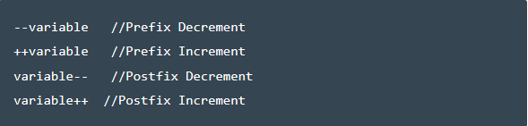

Prefix increment / decrement operators are operators that first increase the value of the variable by 1 (increment) or decrease the value of an expression / variable by 1 (decrement) and then return this incremented / decremented value. They are used like ++(variable) [increment] or --(varaible) [decrement] On the other hand , Postfix increment / decrement operators are operators that first return the value of the variable and then increase the value of that variable by 1 (increment) or decrease the value of the variable by 1 (decrement) . They are used like (variable)++ [increment] or (varaible)-- [decrement]
